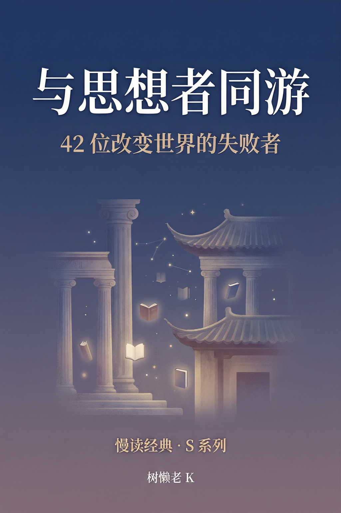

慢读经典 · S系列42位改变世界的失败者
第一季我们跟 52 本书谈了场恋爱。第二季，是去见见介绍人。从孔子到图灵，从苏格拉底到甘地，42 位跨越 2500 年的思想家，按 10 个主题聚类，构成一部非线性的思想史。他们几乎没有一个人在活着的时候"成功"过——孔子四处碰壁，苏格拉底被判死刑，耶稣被钉十字架，马克思穷得养不活孩子，尼采 45 岁疯了。但他们改变了世界。核心论点只有一个：失败不是成功之母——坚持才是。
姊妹篇：《慢读经典》（W系列）— 52对东西方经典的对读